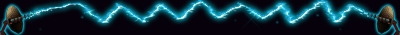

Getting Started
'MAD - Global Thermonuclear Warfare' is a real-time strategy game where you control
one of two remaining superpowers and wage war above the earth using weapons such as
satellite lasers and nuclear missiles.
The game can be played against the computer, or via Internet/LAN network against a human opponent.
The aim of the game is simple - build up your forces and attack your enemy
until you have destroyed all his territories, and you are left in sole control of
the planet (or what's left of it!).
Getting Started
After downloading and installing the game (see the Technical Support pages
if you're having problems with this), you'll be presented with several game modes, plus options to change
game settings or connect to our website.
The available game modes are:
- Single Player - Quick Start
- Single Player - Select Territories
- Two Player
'Select Territories' allows both sides to take turns choosing their territories
before the game begins, while in 'Quick Start' mode territories are assigned randomly.
Game Play - the basics
When the game starts, you'll see the Earth, divided into 16 territories. If you're playing
in 'Select Territories' mode, all territories should be blue, and you can then
take turns to select the territories you want.
Friendly territories are green enemy territories
are red.
You can move the Earth around by holding down the Right Mouse Button and moving the
mouse; alternatively you can click on the World Map in the bottom left hand corner of the screen.
The icons next to the World Map control the amount of detail displayed on the map,
plus whether territories are marked on the planet's surface.
In the top right you'll see the Shortcut Panel. This allows you to quickly select any
friendly territory by clicking on its name. Beneath each territory in the Shortcut
Panel you will see other icons appear as you build new structures; clicking on these
will allow you to travel directly to views of your City buildings or Satellite modules.
By clicking on the Shortcut Panel or directly on a friendly territory, you can
zoom into the City View. All territories begin with a refinery, distinguished by
its rotating satellite dish and antenna. The light at the top of the antenna is
a handy indicator of the strength of that city's shields; green indicates that the
shields are at full strength, blue that they are partially drained, and red that
they are nearly lost.
As you create extra buildings, they will appear in the City View. The view can be
rotated by holding down the right mouse button and moving the mouse; clicking on
individual buildings produces the options associated with that buildings. To return
the zoomed-out view of the planet, click on the Shortcut Panel or press the space bar.
Quick Start Walkthrough
Here's how to start building some units, and to research your first nuclear missile:
- Select a friendly territory (in green), by clicking on the globe or the territory name in the Shortcut Panel.
- In City View, select 'Build Launch Pad' from the Info Panel on the left.
- When the launch pad has been constructed, select it by clicking on it in the main window.
- The Info Panel will change to show space station modules which are currently available to build and launch. Select 'High Gain Solar Panels', and click on Launch.
- When your rocket has launched and its payload has been deployed, repeat the process to launch 'Living Quarters' and 'Sci Lab' from the same launch pad. Note you can't launch a new module until the previous one has finished docking. You can also deploy the 'Wolfbite Missile' module if you want to defend your city against nuclear attack.
- Now you have a fully powered and manned Science Lab in orbit, you can begin research. Press space to return to the Earth View, and select the space station you have built by clicking on or selecting its icon from the Shortcut Panel.
- When you've selected the space station, click on the Sci-Lab icon on the Info Panel. A button will appear allowing you to select the area which you wish to research. Select 'Nuclear Missiles'.
- A percentage value will appear, showing the progress of your research. If you have the funds, you can build other space stations with research labs above other friendly territories - setting these to research the same topic will increase the speed at which research is carried out.
- When the research is complete, a message will appear telling you that the first grade of nuclear missile is now available. Return to the City View, and click on the Refinery. You can now select the 'Build Silo' option to build a nuclear missile silo.
- You will now be able to launch nuclear missiles - just click on the Silo in City View, and select 'Launch' from the Info Panel. You can research more powerful missiles and build more silos, but beware - your enemy will be doing the same and won't hesitate to attack!
Resources - Cash and Uranium
There are two resources in the game - cash and uranium. Cash is self-explanatory,
being required for the construction of any units and buildings; uranium is required to
launch nuclear missiles. Both will be generated automatically by your territories and their
refineries, but you can influence the relative quantities of each by selecting refineries in
City View, and moving the slider on the Info Panel - left to produce more cash, right to produce
more uranium.
Remember that the amount of resources produced by each territory will vary - check the Info Panel
when centered on the refinery to find out how much of each resource the currently selected
territory produces. You can also increase the amount of cash you receive by research -
simply direct your scientists to research 'Commercial Applications'.
Space Stations
Space stations are your main platforms for building defenses against enemy missile
attacks and researching new technologies.
But before you can add exotic new modules, all stations have two basic
requirements - energy and manpower.
To supply extra manpower, launch a 'Living Quarters' module;
to provide extra energy, launch a power-producing unit such as the Solar
Panels or one of the Nuclear Reactors.
You can check the operating efficiency of a space station by selecting it
and looking at the Info Panel; modules without sufficient energy or manpower
will not function at optimum efficiency, and may not function at all.
Modules can be added onto other modules as long as there is an extension point
free (some modules do not have these, so effectively form the end of the chain).
The 4-way extension module can be researched in order to give you more potential sites
for expansion on your station.
If you have built a module by mistake or you no longer require it, you can usually
recycle it by selecting 'Salvage' from the bottom of the space station view
screen. Note that you can only salvage modules at the end of the 'chain',
and that the last module on a station can't be salvaged.
Research
To gain new units and nuclear missiles, you'll need to do some research. You
can do this by equipping your station with a Sci-Lab; stations can have more than
one Sci-Lab, though you'll need to make sure they're adequately supplied with
energy and manpower.
To determine what is being researched, either click on the Sci-Lab directly,
or click on the space station and select the Sci-Lab icon from the Info Panel.
You can then select the area of research you'd like to investigate:
- Nuclear Missiles - allows nuclear launch capability, and five grades of increasingly devastating missile
- Kinetics - projectile-based defensive systems, such as Wolfbite Missiles and Mines
- Electronic Countermeasures - beam weapon-based defensive systems, such as Vaporizers and Disrupters
- Space Station Infrastructure - allows building of modules which facilitate the extension and development of larger space stations, eg. 4-way extensions and more powerful energy sources
- Research - improves the rate at which new technologies are developed.
- Commercial Applications - when complete, facilitates a massive one-off cash injection from the sale of the technologies developed by this research
- Everything - all disciplines are researched equally (the default option)
Different Sci-Labs can be made to research different areas; however, directing more than one Sci-Lab to investigate the same area will boost the speed of the research being done by those labs.
Once you've researched the first level of nukes, you can build silos in each territory to launch them.
To launch a missile, go to City View and click on the Silo; then click on 'Launch' on the Info Panel.
This will send to the main Earth view with a targeting sight; to aim the missile, hold down the right mouse button and spin the globe until the sight rests on your target. The longer you hold down the sight, the larger the targeting sight becomes, and the more inaccurate the resulting missile strike. Learn to target quickly if you want to strike with any degree of accuracy.
Research allows access to 5 different grades of nuclear missile (Full Version only).
You can select which grade you wish to launch by selecting the correct icon from the Info Panel before you launch the missile.
The different grades of missile are increasingly powerful, require greater amounts of uranium, and vary in range, durability and numbers which can be launched at one time from the same silo.

Defensive Units
You should also build defensive units on your space stations to defend your cities
against missile attack.
Defensive units range from missile systems such as the Wolfbite to beam weapons
such as the Vaporizer (full version only);
more advanced defensive technologies are more powerful and neutralize
enemy threats more effectively.
Defensive units will fire on enemy missiles automatically, but to use them most
efficiently you should control them yourself.
Select the space station, and click on the defensive unit's icon on the Info Panel;
your view will change to inside the defensive module, allowing you to target incoming missiles manually.
While in this view, the left mouse button controls firing, the right
button controls a zoom-in function for greater accuracy, and you can press [Space]
to return to the space station.
Other Units (Full Version only)
Tesla Pulse - this station based weapon is unusual in that it is used
against other space stations, rather than at incoming missiles.
The Tesla Pulse fires a concentrated beam of electrical energy which
temporarily paralyses a space station's systems. It is therefore useful for
momentarily neutralizing Station based defenses while a nuclear attack is carried out.
Doomsday Device - truly the weapon of last resort, this weapon when
triggered sets off a massive chain reaction which destroys all territories on the side
of the planet closest to it, both friendly and enemy.
Needless to say, it can only be used once.
Winning the Game
The game is won when all your opponent's territories have been destroyed - simple as that.
A territory is destroyed when its City shields (signified as a percentage figure
when you move the mouse over the refinery building) reach zero; destroyed territories
are displayed in blue, and can't be built on by either side. Any space stations
above destroyed territories will still function, but obviously can't be added to.
Note: in the Demo Version, the game will automatically finish once four
territories have been destroyed.
To play a two player game, you need an Internet connection or to be part of a LAN network.
One player must elect to be the host server; this player selects the method
of connection (Internet TCP/IP, LAN), and the type of game (Quick/Select Territories),
starts the game and waits for the other player to connect.
The other player then selects 'Join Existing Server', and will be prompted
for an IP address or computer name. The game then proceeds as in the Single Player mode.
|